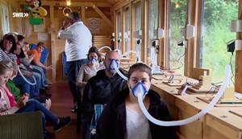
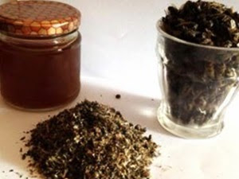
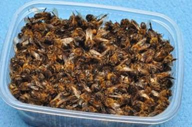
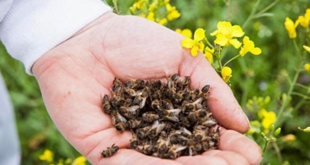
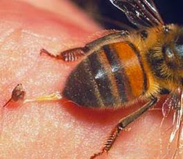
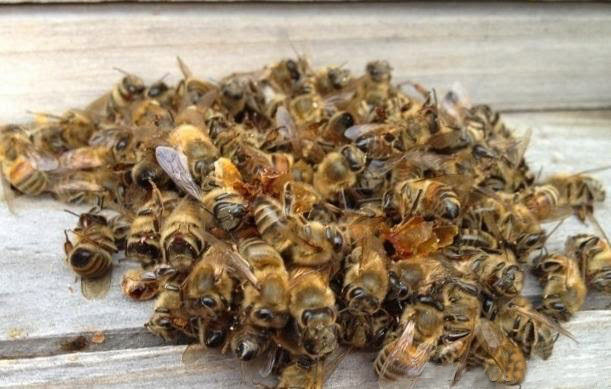

Будь-хто, хто коли-небудь вдихав повітря з вулика знає, як дивовижні бувають пахощі, що доносяться часом з його
надр. Влітку, в період активного медозбору, коли бджоли переробляють нектар в мед, зовсім необов'язково
заглядати у вулик, щоб відчути цей аромат. Тихими безвітряними вечорами він закутує пасіку немов чарівне
покривало, дезинфікуючи повітря в радіусі до 200 м. Не знаю як кому, а особисто мені ці запахи нагадують
кондитерську, де печуться ароматні піроги. Неважко представити концентрацію цілющих речовин безпосередньо в
самому вулику. А давайте спробуємо перетворити найзвичайніший вулик на вулик-інгалятор.
Ні для кого не секрет, що сьогодні ми живемо в епоху занепаду, коли все більше і більше людей страждають від
захворювань дихальних шляхів. Особливо діти, ледве з'явившись на світ, вже страждають від астми, алергії,
бронхіту і частої застуди. Захворювання верхніх дихальних шляхів, в першу чергу, пов'язані з погіршенням якості
повітря, яким ми дихаємо.
Повітря також, як їжа, світло і вода складають основу нашої життєдіяльності.
Відповідно до старокитайського вчення про природжену і придбаною Ци(життєво важливій енергії) з повітря ми
отримуємо 30% цієї енергії. Тому тривалість нашого життя і її якість як мінімум на третину залежать від складу
повітря, що оточує нас, і кількості в нім природною Ци. Не даремно говорять, що на природі дихається легше.
Не варто забувати до того ж, що якщо без їжі ми можемо прожити більше місяця, без води декілька днів, то без
повітря усього лише декілька хвилин.
Повітряне середовище бджолиного вулика, що є ні що інше, як стерильна лабораторія, наповнене елементами
натуральних лікарських речовин, які люди спрадавна вживають в медичних цілях. Сюди входять такі інгредієнти,
як ефірні олії, флавоноїди, мед, пилок, віск і прополіс, бджолина отрута, маткове молочко. Ще в стародавньому
Єгипті вважалося, що заспокійливі аромати з вулика мають цілющий ефект. Ось і в наші дні багато бджолярів стали
замислюватися про те, як можна розпорядитися бджолиними дарами, що називається, сповна. У рамках оздоровчого
туризму, на пасіках стали активно створюватися лікувальні апі-центры, обладнані ноу-хау облаштуваннями ApiAir.
Інгалятор ApiAir. Механізм роботи оздоровчого облаштування ApiAir грунтований на відсмоктуванні повітря з
вулика і подальшому поданні його через шланг і маску в легені пацієнта. Хворий вдихає повітря з вулика ротом,
а видихає його через ніс. При цьому пацієнт не має безпосереднього контакту з бджолами - він сидить поруч або
позаду вулика, а найчастіше в закритому приміщенні, куди не можуть залетіти бджоли. Тривалість інгаляції
зазвичай складає 15-20 хвилин, з періодичністю 2 рази в день.
Подібні інгалятори, як правило, обладнані вбудованим витяжним вентилятором з регулятором швидкості обертання,
що дозволяє дозувати силу цілющого потоку з вулика. Спорудити такий пристрій на один або декілька вуликів
можна і самому на своїй пасіці. Для цього досить виконати круглий отвір потолочине вулика, закрити його
дрібною сталевою сіткою і вмонтувати в кришку вулика вентилятор з потокоотводящей трубкою-шлангом(см.фото нижче).

Перш ніж приступати до приготування настоянки з бджолиного підмору, що зціляє від простатиту, давайте спробуємо
розібратися з самим терміном "підмор" і механізмами його дії на організм людини. Гинучи, бджола дарує людям найцінніше,
що у неї є - своє тіло. Сукупність тілець загиблих бджіл і називається підмором. Підмор складається з безлічі корисних
речовин.
Головним з них є хітин або хитозан-меланиновый комплекс.
Хітин відкрили близько двохсот років тому. По своєму складу
хітиновий покрив бджіл схожий на склад панцирів ракоподібних і в промислових масштабах хітин добувається з морських
панцирних(краби, креветки і ін.).
Хітозан складається з таких корисних елементів, як:
- бджолина отрута;
- гепарин;
- меланін;
- оцтова кислота;
- глюкозамин;
Бджолина отрута або апитоксин віками застосовується в народній медицині у вигляді лікування жаленнями бджіл. Проте
багатьом хворим протипоказане лікування жаленнями (алергія на бджолину отруту, хвороби нирок і печінки, діабет,
відсутність умов для апитерапии). Настоянка з бджолиного підмору, дозволяє в звичайних умовах проводити м'яку
апітоксинотерапію, невеликими дозами бджолиної отрути. Термостійкість апітоксину до заморожування і тривалого
нагрівання, доведена ученими, дозволяє готувати відвари і распары з підмору без змін лікувальних властивостей бджолиної
отрути, що входить до його складу.
Гепарин зменшує запальні процеси, і сприяє стабілізації артеріального тиску, допомагає при варикозі і тромбофлебіті.
Гепарин добувають штучним шляхом з хітинового покриву бджіл. Але це дорого і не всім доступно.
Меланін має яскраво виражені радіопротекторні властивості. Він здатний виводити з організму радіонукліди і солі важких
металів.
Оцтова кислота покращує здатність згущуватися крові, добре очищає посудини.
Глюкозамин близький за складом до хрящової тканини і входить в ліки для лікування артриту і захворювань сутавов.
Бджолиний підмор у вигляді настоянки на горілці добре допомагає при простатиті і застійно-запальних процесах в органах
малого тазу. Дослідження довели, що ефективність такого лікування досягає 87,6%. В результаті лікування простатиту
підмором покращується сечовипускання, нормалізується розмір передміхурової залози, йдуть больові симптоми, зміцнюється
потенція.

Бджола не вічна. Природа так влаштувала, що, виконавши, свої завдання по будові сотів і наповненню вулика медом,
бджоли помирають. У вулику ви знайдете тельця бджілок, які ще зовсім нещодавно приносили в стільники медову ношу.
Таких мертвих бджіл пасічники називають підмором. Якщо умови зимівлі були жахливі, то підмору у вуликах буде дуже
багато. Втім, вішати ніс не треба. Все не так погано, як здається. Не варто вимітати неживих бджілок, як непотрібне
сміття. Підмор може стати одним з джерел поповнення доходів з пасіки. Потрібно тільки навчитися правильно застосовувати
підмор. Але як? І для чого?
Користь бджолиного підмору незаперечна. Підмор можна застосовувати як цінний засіб для приготування цілющих настоянок,
мазей. Особливо хороший, корисний осінній підмор. За літо бджола накопичує немало цінних речовин у своєму організмі.
Для медичних цілей треба тільки брати підмор
- без неприємного запаху
- однорідного кольору
- без ушкоджень
- без гнилизни.
Зібравши мертвих бджіл, просіюватимемо їх через сито. Підсушимо на печі при невисокій температурі. Сушитимете в духовці,
зробіть температуру не вище 50 градусів за Цельсієм. Висушений підмор розкладаємо по коробках, в мішках з полотнини.
Зберігаємо в місцях, де немає мишей і щурів, плісняви, вогкості. Погано просушите підмор -- з'явиться гнильця, природно,
така сировина не піде на лікування. Його доведеться просто викинути, як те ні жалюгідне. Деякі зберігають підмор в
морозильниках. Для добре просушеного підмору шкоди від такого зберігання не буде.
У правильно підготовленому підморі багато хітозану, меланіну -- біологічних компонентів, які посилюють функції ряду
органів людського тіла. Підмор допоможе зупинити кров, очистити рани, зменшити біль при опіках усіх мір. Цілющу силу
надає бджолина отрута. Але не лише він, але і амінокислоти, вітаміни P, K, C, D, E, довгий список мікроелементів.
 Кожен з практиків бджільництва легко переконується на ділі в користі бджолиного підмору. Пасічник повинен знати, що корисно готувати з підмору спиртові витяги, мазі, настої, відвари. Рецептура загальновідома. Про неї ви прочитаєте на нашому веб-ресурсі. "Медове літо" пропонує заглянути в нашу бібліотеку і відеотеку, щоб познайомитися з діловими радами. Підмор -- дивовижний продукт бджільництва, який як би символізує філософію служіння бджоли людині. Адже навіть після своєї загибелі крихітна бджола залишається корисною людям, зціляючи і зміцнюючи організм людини.

Народні методи лікування бджолами як живими, так і такими, що відійшли, як мовиться, у світ іншій досить різноманітні,
а захворювань, від яких можна позбавитися ще більше. Сюди входять і такі що складно піддаються лікуванню хвороби як
простатит, гінекологічні проблеми, варикозне розширення вен, хвороби суглобів і остеохондроз та ін.
Проста форма лікування бджолами або апитерапия це лікування жаленнями бджіл, тобто лікування бджолиною отрутою, яка
запускається бджолою в організм хворого безпосередньо при його жаленні. Апитоксин або, просто кажучи, бджолина отрута
сприяє приливу крові до місця жалення. Разом із запальною реакцією, зникаючою через добу, з організму хворого йдуть
сторонні речовини і відновлюється рухливість суглобів.
Декілька сеансів апитерапии приносять пацієнтові значне
полегшення.
Лікування загиблими бджолами або бджолиним підмором передбачає його приготування по рецептами народної медицини :
- спиртові і горілчані настоянки з підмору з прополісом;
- відвари і распары з підмору ;
- смажений підмор з додаванням соняшникової олії;
- сухий подрібнений підмор;
- мазі з підмором;
 В цьому випадку для лікування використовується не лише бджолина отрута, але маса цінних мікроелементів, з яких складається тільце бджоли. Не слід застосовувати бджіл, що пройшли хімічну обробку від кліща і інших хвороб. Оптимально використати літній підмор, що не містить ветеринарних препаратів. При лікуванні підмором не варто забувати, про те що його індивідуальна непереносимість може бути одним з протипоказань до лікування. Такі хвороби як бронхіальна астма, діабет, захворювання кровотворної і серцево-судинної системи, важкі ураження печінки, загострення виразки шлунку, загострення ревматоїдного артриту, сильне фізичне виснаження, вагітність, період лактації, вік пацієнта до п'яти років можуть стати серйозною перешкодою на шляху до лікування підмором.